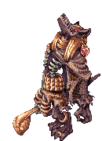
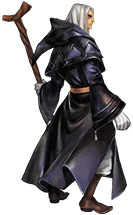

Personagens

Anúbis, o Deus da Morte e do Caos. Quieto, conversa de maneira suave e na maioria das vezes, apenas quando alguém fala com ele. É amigável com aqueles
que não possui nada em particular. Tem medo de seu maior segredo ser revelado. Sonha em ter sua fortuna: um mundo em paz.
Raça: Humanóide
Sub-raça: Chacal
Tipo: Inimigo, Boss (Divindade)
Sub-raça: Chacal
Tipo: Inimigo, Boss (Divindade)
HP total: 35.000
Estado atual: Foragido de seu selamento. Parece estar planejando algo...

Dymos, o primeiro Necromage. Bravo, grita e desgosta dos jogadores. Sempre fala a verdade e assume seus erros, um homem honesto. Tem medo
de falhar no geral, seja em combate ou com aqueles que gosta. Seu maior sonho é se tornar o ser mais forte do Universo.
Raça: Evolucer
Sub-raça: Fosworn
Tipo: Inimigo, Boss (Nequício)
Sub-raça: Fosworn
Tipo: Inimigo, Boss (Nequício)
HP total: 21.500
Estado atual: Sua sede é insaciável: "... Eu preciso de mais, MAIS!".gif)
Jasper, o atual Rei. Bravo, grita e perde a paciência rapidamente, mas costuma ser bom humorado e fazer piadas o tempo todo. Tem medo
de seu segredo mais obscuro ser revelado. Seu trabalho é comunicar-se e passar mensagens de Osiris, o Deus imperador.
Raça: Humano
Sub-raça: Nord
Tipo: Aliado, NPC (Nequício)
Sub-raça: Nord
Tipo: Aliado, NPC (Nequício)
HP total: 23.000
Estado atual: Osiris está furioso! Precisamos selar aquela coisa!
Barnet, o ferreiro e guerreiro do reino. Desconfiado, não confia em quase ninguém, mas caso tenha a confiança conquistada, será um ótimo ajudante aos
jogadores. Tem medo de perder os que ama. Sonha em viajar o mundo com sua família, principalmente com sua filha.